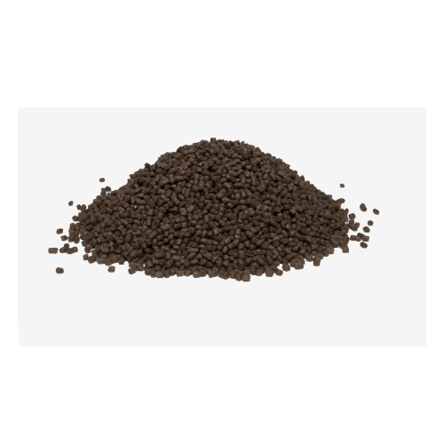

Ração para peixes de fundo como para arraias, catfish, Polypterus, etc.

A ração de fundo é um alimento completo e balanceado, ideal para peixes de fundo carnívoros e onívoros como arraias, catfish, cascudos e Polypterus. Com 48% de proteína, proporciona crescimento saudável, vitalidade e excelente desenvolvimento.
Com fórmula premium e formato em sticks afundantes, garante alta digestibilidade, ótima aceitação e não se dissolve rapidamente, ajudando a manter a qualidade da água e reduzir desperdícios.
Benefícios
- 48% de proteína de alta qualidade
- Ideal para peixes de fundo
- Indicado para carnívoros e onívoros
- Alta palatabilidade e aceitação
- Não se dissolve facilmente
- Ajuda a manter a água limpa
Espécies Indicadas
- Arraias de água doce
- Polypterus (Bichir)
- Catfish (bagres)
- Cascudos carnívoros e onívoros
- Pimelodus e Sorubins
- Outros peixes de fundo
Mix Campo, ração Mix Campo, produtos Mix Campo, alimentação para peixes Mix Campo